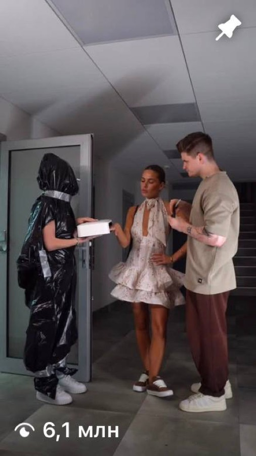
TNL
Охватный ролик для бренда товаров для ногтей.
6,1 млн просмотров · около 700 подписчиков8 роликов от 25 000 ₽
Идеи, сценарии, съёмка и монтаж — беру на себя.
Создаю Reels, Shorts и VK Клипы. Помогу подготовиться к съёмке и уверенно чувствовать себя в кадре.
Обсудить задачу в Telegram ↗Предварительная стоимость. Состав и сроки согласуем до оплаты.
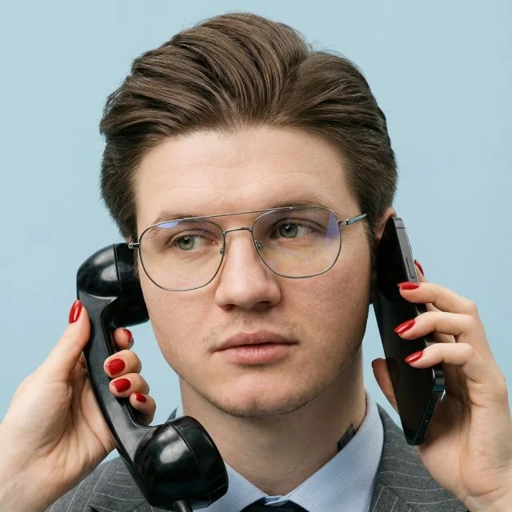
Шоурил и фотографии со съёмок: люди, продукты и рабочий процесс.
Посмотрите подачу, кадры и монтаж — а затем обсудим формат для вашей задачи.
Обсудить похожую съёмку ↗Не удалось запустить видео. Попробуйте кнопку воспроизведения в плеере.
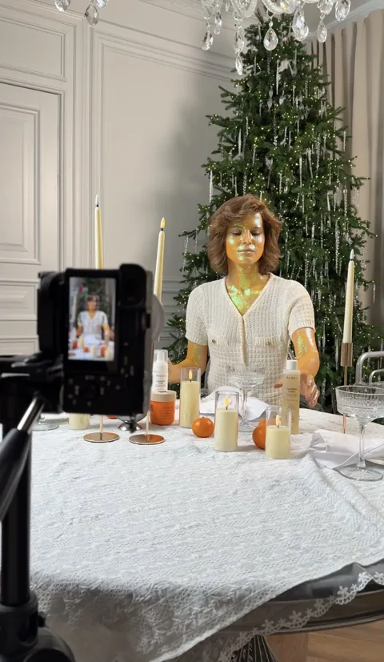
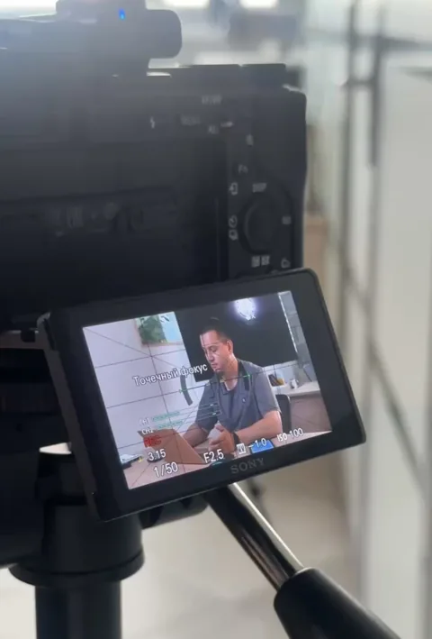
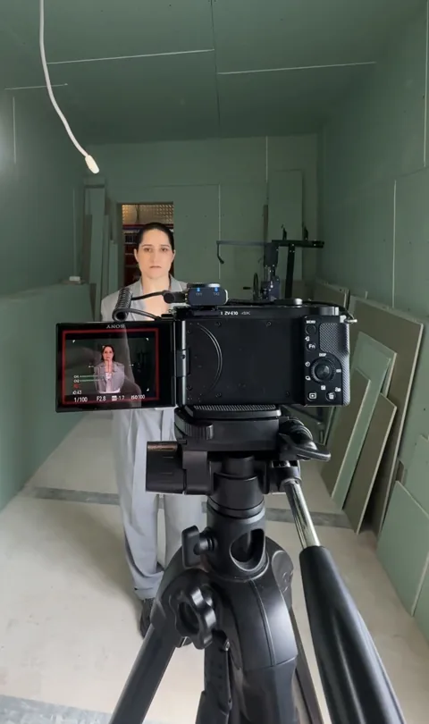
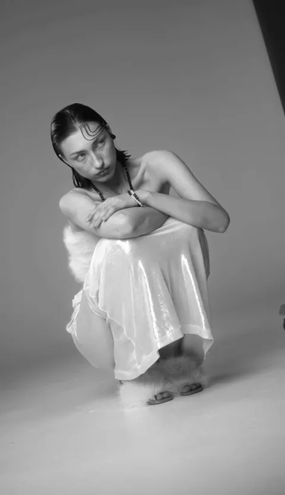
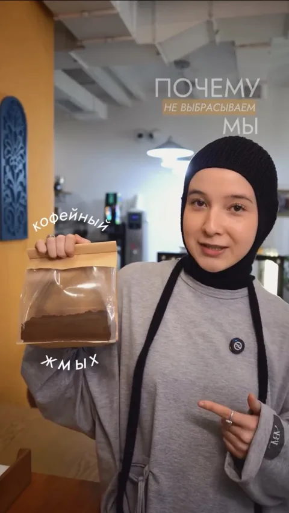
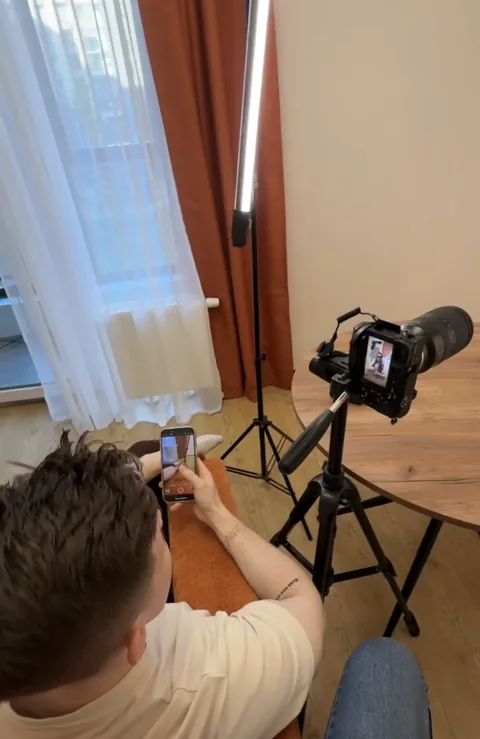
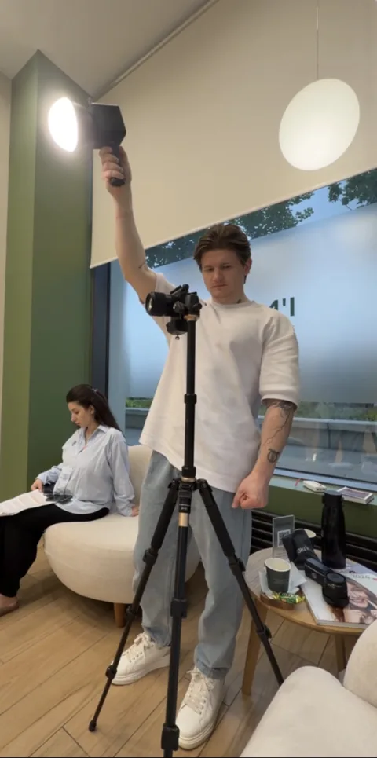
Примеры видео для бизнеса, брендов и личных блогов.

Охватный ролик для бренда товаров для ногтей.
6,1 млн просмотров · около 700 подписчиков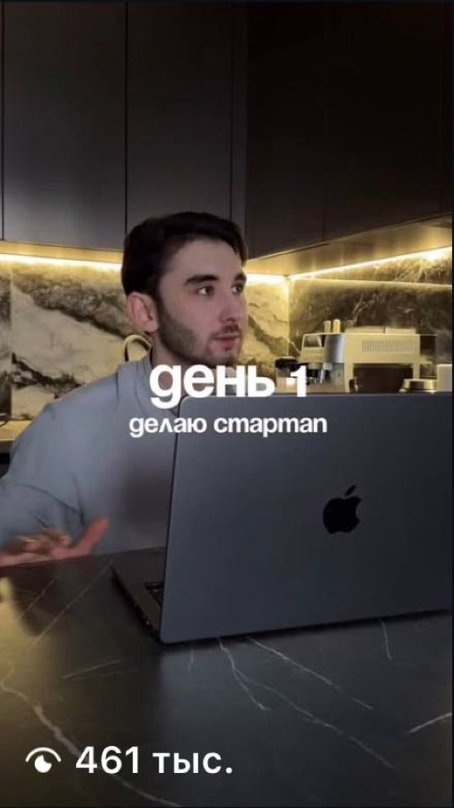
Ролик для личного блога о создании стартапа.
461 тыс. просмотров · +1 000 подписчиков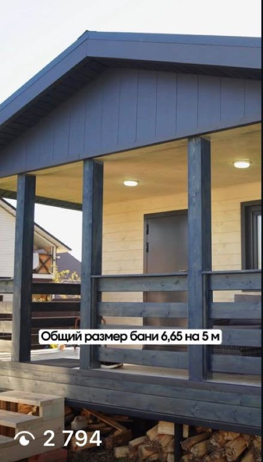
Обзор готовой бани.
15–20 заявок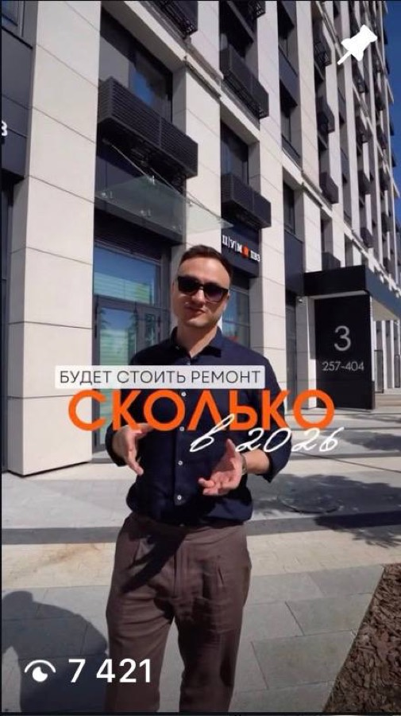
Ролик о стоимости ремонта.
+50 подписчиков · 74 репоста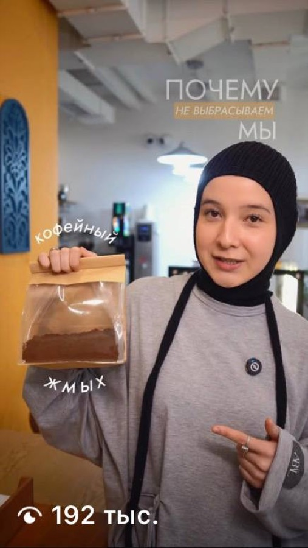
Ролик о кофейном жмыхе.
192 тыс. просмотров · +101 подписчик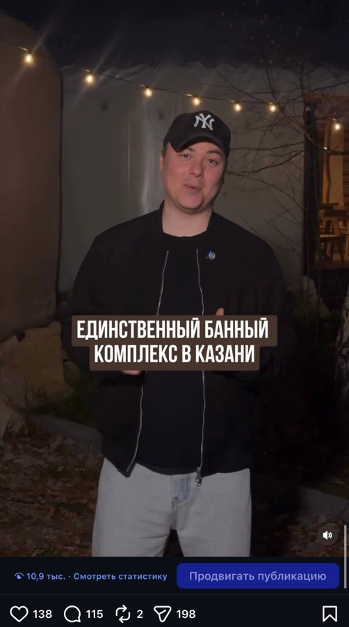
Ролик о банном комплексе в Казани.
+135 подписок · 70+ заявок в директ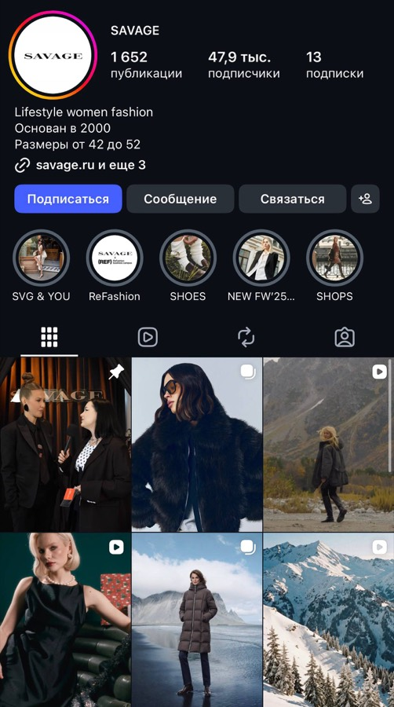
Коммерческая видеосъёмка для бренда одежды.
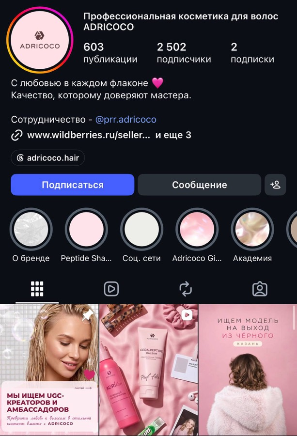
Видео для бренда профессиональной косметики для волос.
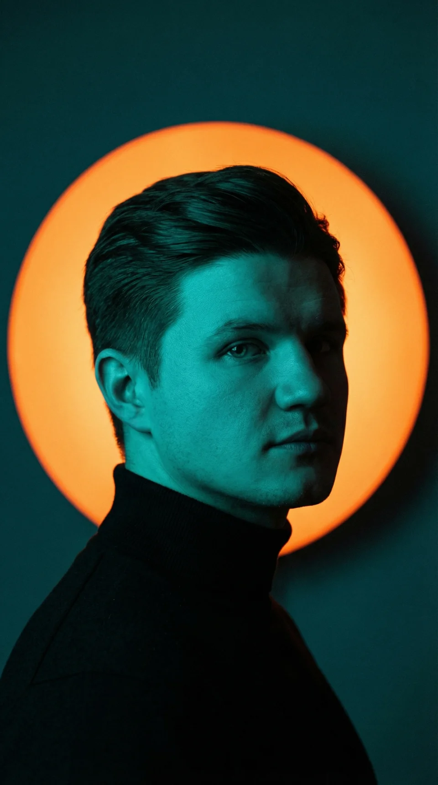
Понимаю контент
по обе стороны камеры.
Развиваю собственные площадки и создаю видео для клиентов. Соединяю идею, подачу, съёмку и монтаж в один понятный процесс.
Работаю с предпринимателями и экспертами, а также с агентствами, маркетологами и продюсерами, которым нужен подрядчик на производство.
Необязательно начинать с готовой идеи. Расскажите о бизнесе — предложу темы и формат под вашу задачу.
Объяснения, ответы на вопросы клиентов и личная подача.
Обзоры товаров, демонстрации и рекламные видео.
Процессы, команда, объекты и готовые проекты.
Эксперты и обучение / недвижимость / бьюти / производство / рестораны / товары
Запросить примеры под мою задачу ↗Нужен оператор — сниму и передам исходники. Нужны готовые ролики — возьму на себя подготовку, съёмку и монтаж.
Снимаю на Sony a6400, Sony ZV-E10 или iPhone 16 Pro Max. Использую несколько источников света, петличный микрофон Hollyland Lark M2 для записи речи, а также конденсаторный или динамический микрофон для подкастов, интервью и записи за столом. Комплект подбираю под задачу.
Помогу сформулировать темы, найду подходящие референсы и распишу, что говорить, как встать и куда смотреть. Если у вас уже есть тексты — проверю и доработаю их; если текстов нет — до съёмки согласую написание сценариев с нуля и объём подготовки.
Передаю снятые материалы. До начала работы согласую с вами формат файлов, способ передачи и дату отправки.
Подберу темы и подходящие референсы, распишу, что говорить в каждом ролике, как встать и куда смотреть. Перед съёмкой согласую сценарии и подачу.
Подскажу, как встать, куда смотреть и как подать текст. Проверю свет и композицию, помогу с речью и запишу необходимые дубли.
Отберу дубли, соберу ролики, обработаю звук, скорректирую цвет и добавлю субтитры. Сложную графику и дополнительные задачи рассчитаю отдельно.
Передам готовые вертикальные видео для выбранных площадок. Формат, разрешение, длительность и дату передачи зафиксирую до начала работы.
До оплаты зафиксирую сценарии, длительность роликов, часы съёмки и сроки сдачи. Дополнительные часы — только по согласованию.
Подберу темы и подходящие референсы, распишу, что говорить в каждом ролике, как встать и куда смотреть. Перед съёмкой согласую сценарии и подачу.
Подскажу, как встать, куда смотреть и как подать текст. Проверю свет и композицию, помогу с речью и запишу необходимые дубли.
Отберу дубли, соберу ролики, обработаю звук, скорректирую цвет и добавлю субтитры. Сложную графику и дополнительные задачи рассчитаю отдельно.
Передам готовые вертикальные видео для выбранных площадок. Формат, разрешение, длительность и дату передачи зафиксирую до начала работы.
До оплаты зафиксирую сценарии, длительность роликов, часы съёмки и сроки сдачи. Дополнительные часы — только по согласованию.
Подберу темы и подходящие референсы, распишу, что говорить в каждом ролике, как встать и куда смотреть. Перед съёмкой согласую сценарии и подачу.
Подскажу, как встать, куда смотреть и как подать текст. Проверю свет и композицию, помогу с речью и запишу необходимые дубли.
Отберу дубли, соберу ролики, обработаю звук, скорректирую цвет и добавлю субтитры. Сложную графику и дополнительные задачи рассчитаю отдельно.
Передам готовые вертикальные видео для выбранных площадок. Формат, разрешение, длительность и дату передачи зафиксирую до начала работы.
До оплаты зафиксирую сценарии, длительность роликов, часы съёмки и сроки сдачи. Дополнительные часы — только по согласованию.
Цены предварительные. Итоговую стоимость, состав и сроки зафиксирую с вами до оплаты. Студия, актёры, специальный реквизит и сложная графика рассчитываются отдельно. Публикация и ведение соцсетей обсуждаются отдельно.
На созвоне или встрече выясню задачу, аудиторию и площадки для видео.
Согласую с вами сценарии, локацию, часы съёмки, стоимость и сроки сдачи.
Настрою оборудование, помогу с подачей в кадре и запишу материал.
Смонтирую ролики и отправлю готовые файлы в согласованный срок. При почасовой съёмке передам исходники.
Напишите, чем занимаетесь и какие видео нужны.
Пришлю подходящие примеры и предложу формат.